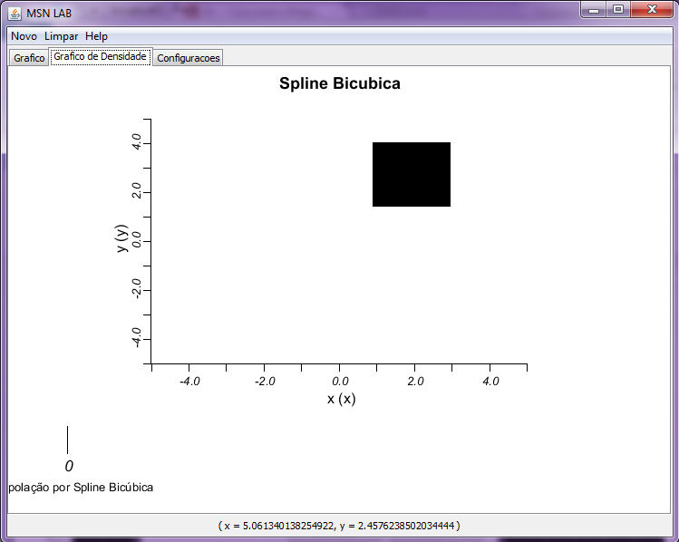

Spline Bicubica
Para utilizar a Spline Bicubica em um conjunto de pontos se faz necessário
seguir as instruções abaixo:
- Com um conjunto de pontos definido no gráfico,
clique no Menu Novo -> Interpolacao -> Spline -> Spline
Bicubica.
- Em seguida, escolha o peso de cada ponto
- Em seguida, podemos ver o gráfico
da seguinte maneira:
